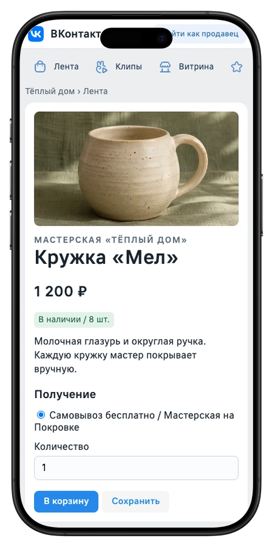

Где начать
У 493 сообществ уже есть каталог, просмотры товарного контента и подходящая аудитория: больше 1 тыс. и до 100 тыс. подписчиков включительно.


У 493 сообществ уже есть каталог, просмотры товарного контента и подходящая аудитория: больше 1 тыс. и до 100 тыс. подписчиков включительно.
Разница в заказах на назначенный бизнес за 30 дней между тестом и контролем. Считаем и нулевые значения.
Доля бизнесов с заказом и число выдач. Отмены показывают, где продажа срывается.
Целевой прирост: 0,76 заказа на бизнес.
Доля всех открытий товаров VK, сентябрь 2026
Покупатель начинает с товара. Витрина продавца собирает ассортимент, на неё можно вести внешний трафик.
Покупатель выбирает объявление, уточняет детали у продавца. Переписка особенно важна для нестандартных товаров.
Автор показывает вещь в действии. Товар доступен из видео, эфира и витрины профиля.
Больше 1 000 и не больше 100 000 подписчиков. Берём сообщества и с заказами, и без них.
Доля бизнесов с заказом внутри диапазона подписчиков. У всех есть активный товар.
84 из 396 с просмотрами товарного контента, 66 из 1 059 без просмотров.
37 из 97 с просмотрами, 25 из 132 без просмотров.
372 сообщества. Помогаем пройти путь покупателя, исправить условия получения и связать товар с записью.
121 сообщество. Даём очередь заказов, причины отмен и возможность повторить публикацию.

В редакторе продавец задаёт цену, остаток и способ получения. Для публикации нужны текст записи и доступный способ получения.

Из записи покупатель открывает карточку, выбирает получение, видит стоимость и оформляет заказ.

В заказе сохранены цена и условия на момент покупки. Покупатель видит выдачу или отмену после действия продавца.
Продавец открывает магазин сообщества.
Первое предложение учитывает каталог и историю заказов.
Событие · вход в настройкуПроверяет наличие товара и условия.
Для самовывоза вводит адрес, для курьера указывает срок и цену.
Событие · товар готовСвязывает карточку с записью.
Покупатель видит товар в контексте и может сохранить его.
Событие · открытие из записиПокупатель выбирает получение.
Создаётся заказ, фиксируются цена и условия. Продавец видит его в очереди.
Событие · заказ оформленПродавец подтверждает выдачу.
При отмене указывает причину. Покупатель видит историю заказа.
Событие · выдача или отменаПроверяем, доступен ли товар, заполнены ли условия и открывается ли карточка из записи. Потом предлагаем продвижение.
В аналитике продавец открывает выдачи и отмены, выбирает товар для следующей записи.
Проверяем напоминание о сохранённом товаре. Успех измеряем повторными заказами и жалобами.
20% покупают дополнительное продвижение на 1 500 ₽. При марже 65% и 60 ₽ поддержки остаётся 135 ₽.
Столько нужно, чтобы покрыть 400 тыс. ₽ постоянных затрат в месяц.

Может без помощи подготовить карточку, опубликовать товар и найти поступивший заказ.
Видит условия заранее, получает номер заказа и может проверить его статус.
Сравниваем среднее по всем назначенным бизнесам. Учитываем заказы со всех поверхностей VK.
Одновременно смотрим выдачи, отмены, жалобы и дополнительные расходы на продвижение.
3 478 оформленных заказов у 298 бизнесов. Оборот по строкам бизнесов составляет 9,97 млн ₽.
У половины бизнесов число заказов равно нулю. Исключение таких строк завысило бы среднее.
Для источников используем открытия из листа источников. Для категорий сравниваем строки одного листа.
Оплата возможна вне VK. В данных 268 бизнесов получили заказы при выключенном флаге оплаты.
14 бизнесов получили заказы при выключенном флаге оформления. Состояние флага могло измениться внутри периода.
Открытия карточек не содержат пути конкретного покупателя до заказа.
20 000 доступных магазинов × 30% подключения × 20% платящих × 1 500 ₽ в месяц.
65% выручки остаётся после прямых затрат. Вычитаем 360 тыс. ₽ поддержки и 400 тыс. ₽ постоянных расходов.
15% платят за дополнительное продвижение по 1 000 ₽. Поток в месяц -325 тыс. ₽.
20% платят за дополнительное продвижение по 1 500 ₽. Поток в месяц +410 тыс. ₽.
25% платят за дополнительное продвижение по 1 800 ₽. Поток в месяц +2 855 тыс. ₽.
Случайно делим бизнесы на две группы внутри диапазонов аудитории, тематики и наличия заказов до теста.
Считаем все оформленные внутри VK заказы за 30 дней на каждый назначенный бизнес, в том числе с нулём заказов.
Доля продающих бизнесов, выдачи, отмены и жалобы. Смотрим также общие расходы на рекламу.
При среднем 3,79 и разбросе 18,49 заказа за месяц. Оценка на одну группу.
Для роста с 24,5% до 29,5% ориентир составляет 1 238 на группу, всего 2 476.
Сравним общие заказы внутри VK, выделим изменения по точкам входа.
Сравним распределения и доли бизнесов с заказом. Заранее зафиксируем правила анализа выбросов.
Сверим отмены и причины по двум группам. Разберём проблемный этап с продавцами.
Сентябрь 2026. Семь листов. Сегмент и заказы рассчитаны по строкам бизнесов, точки входа по агрегатам открытий.
Стр. 7–9: формат и оценка. Стр. 20: пять вопросов к стратегии.
Консультация экспертов ↗13:05: приоритет у заказов. 22:15: оплата может пройти вне VK. 46:00: различие между витриной и Маркетом.
Сверка показателей ↗Контрольные суммы, знаменатели и расхождения между листами.
Две роли, общий каталог, заказ, остаток и история. Инструкция по запуску.
Расчёты в Excel ↗Группы аудитории, источники открытий, категории, денежный поток и выборка эксперимента.
Репозиторий проекта ↗Исходный код, воспроизводимые расчёты, презентация и материалы для проверки.
Устройство магазина, товары и инструменты сообщества.
TikTok Shop ↗Покупка из видео, эфиров и витрины профиля.
Ozon для продавцов ↗Витрина магазина и переходы из внешних источников.
Дизайн-система VKUI ↗Компоненты и иконки интерфейса прототипа.
VK Sans ↗Фирменная гарнитура VK.